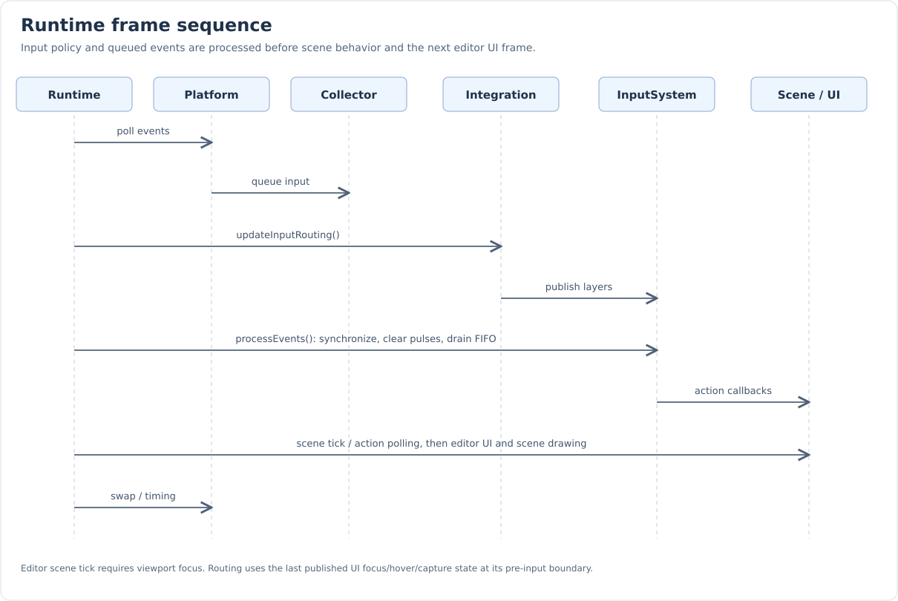

Frame Lifecycle and Integration
Input is processed once in Runtime before scene/controller behavior is ticked. ApplicationIntegration supplies context policy at that boundary. Individual domain controllers consume already-routed actions rather than polling hardware themselves.
Startup and registration
GameInstance::initialize() creates the Platform window, then initializes the input
system with that window. InputCollector installs keyboard, mouse-button, pointer,
wheel, and focus subscriptions. Its initialization is idempotent.
The collector is currently bound to one window; it is not a window-switching API. Do not initialize the same singleton with different windows expecting independent input streams.
InputController registers itself during onInitialize. onDeinitialize and its destructor unregister it. Registration does not retain a strong owner. Repeated registration of the same pointer is ignored.
The named/context InputController::Create(name, context) overload initializes
the component before returning. The macro-provided no-argument Create only
allocates; initialize it or attach it through a lifecycle path that initializes children.
HumanController/EditorController mutable getInput ensures initialization and child creation.
Runtime frame order

Platform::Window::pollEvent();
if (auto* integration = _gameInstance.getApplicationIntegration())
{
integration->updateInputRouting();
}
else
{
GetInputSystem().setActiveContext(InputContext::Gameplay);
GetInputSystem().setGlobalContext(std::nullopt);
}
GetInputSystem().processEvents();The order is:
-
Poll window events; collector subscriptions enqueue input.
-
Call integration
updateInputRouting(), or select Gameplay/no global without integration. -
Call
processEvents()to clear old pulses, update device state, and dispatch queued events. -
Tick the scene in GameOnly, or only while the viewport is focused in Editor.
-
Update/draw the editor and scene using the appropriate rendering path.
-
Tick GameInstance when a camera exists, swap buffers, and record frame duration.
The scene uses the previous measured frame delta; the first delta is zero. Input callbacks can run even if scene ticking is gated by viewport focus. Camera movement implemented through held-action polling requires its component to tick; pointer callbacks can run during input processing.
Do not call processEvents again from an individual controller or an editor widget. A second call starts another input frame and clears Press/Release/pointer pulses. Likewise, components should not subscribe to raw hardware simply to recreate semantic actions already covered by the routed system.
Inside processEvents
-
Synchronize registrations with context availability and physical held state.
-
Clear each controller’s previous transients while retaining valid held bindings.
-
Drain queued events in FIFO order.
-
For each Button event, update global recording-capture tracking.
-
Apply the event to device state, even while capture is active.
-
Remove released buttons from router quarantine and gesture ownership.
-
If recording capture was active before or after tracking the event, cancel actions and suppress delivery; otherwise route it through the layers.
Checking capture both before and after the update suppresses the final release that clears a recording fence. That release does not leak into normal actions. Pointer samples still establish/update the physical baseline while suppressed.
Editor routing policy
EditorIntegration::updateInputRouting() owns the engine/editor choice of contexts.
It uses editor visibility, viewport focus/hover, ImGui capture flags, active modals,
and router pointer ownership.
| Condition | Base/global selection |
|---|---|
Editor visible and viewport focused |
Base EditorViewport. |
Editor visible without viewport focus |
Base Editor. |
GameOnly or editor not visible |
Base Gameplay. |
Editor is enabled, including GameOnly with an attached editor |
Global Editor, allowing shortcuts such as F1 to return. |
Editor disabled |
No global Editor layer. |
| Overlay | Policy/channels | When used |
|---|---|---|
Viewport hover |
ConsumeMatched / Pointer |
Visible editor, unfocused viewport, and viewport hovered or an accepted pointer gesture exists. |
Text entry |
BlockLower / Keyboard |
WantTextInput, or WantCaptureKeyboard outside a focused viewport. |
UI pointer capture |
BlockLower / Pointer, with TextInput identity |
WantCaptureMouse outside the hovered viewport, while no routed gesture owns the pointer. |
Modal |
BlockLower / All |
Visible editor and a top-most ImGui modal exists; lower temporary editor overlays are removed. |
ImGui capture flags and viewport state are the last published UI state at this pre-input point. The editor’s new UI frame is built later. This is the current ordering, not a guarantee that every newly opened widget is reflected in routing before its first draw.
Overlay guards are retained as members and updated only when their conditions change. A modal removes the hover/text/pointer guards before pushing its All blocker. InputSystem synchronizes cancellation immediately when these guards change.
The complete integration hook is included from source for policy maintenance:
void EditorIntegration::updateInputRouting()
{
auto& input = GetInputSystem();
const bool editorVisible = _editor.isEnabled() && _runtime.getGameInstance().isEditorMode();
const auto* viewport = _editor.getWindow<GameViewportEWC>();
const bool viewportFocused = editorVisible && viewport && viewport->isFocused();
const bool viewportHovered = editorVisible && viewport && viewport->isHovered();
input.setActiveContext(
editorVisible ? (viewportFocused ? InputContext::EditorViewport : InputContext::Editor)
: InputContext::Gameplay);
input.setGlobalContext(_editor.isEnabled() ? std::optional{ InputContext::Editor }
: std::nullopt);
const auto setOverlay =
[&input](std::optional<InputContextGuard>& guard, bool enabled, InputContextLayer layer)
{
if (enabled && !guard)
{
guard.emplace(input.pushContext(layer));
}
else if (!enabled)
{
guard.reset();
}
};
const auto& io = ImGui::GetIO();
const bool modalOpen = editorVisible && ImGui::GetTopMostPopupModal();
if (modalOpen)
{
_viewportHoverContext.reset();
_textInputContext.reset();
_pointerCaptureContext.reset();
setOverlay(
_modalContext, true,
{ .context = InputContext::Modal, .policy = InputContextPolicy::BlockLower });
return;
}
_modalContext.reset();
const bool pointerCaptured = input.hasPointerCapture();
setOverlay(_viewportHoverContext,
editorVisible && (viewportHovered || pointerCaptured) && !viewportFocused,
{ .context = InputContext::EditorViewport, .channels = InputChannel::Pointer });
setOverlay(_textInputContext,
editorVisible
&& (io.WantTextInput || (io.WantCaptureKeyboard && !viewportFocused)),
{ .context = InputContext::TextInput,
.policy = InputContextPolicy::BlockLower,
.channels = InputChannel::Keyboard });
setOverlay(_pointerCaptureContext,
editorVisible && io.WantCaptureMouse && !viewportHovered && !pointerCaptured,
{ .context = InputContext::TextInput,
.policy = InputContextPolicy::BlockLower,
.channels = InputChannel::Pointer });
}EditorIntegration::updateInput() currently has an empty implementation. It remains
an integration hook; routed input is already processed before the scene tick.
Editor commands and viewport actions
GameEditor owns separate EditorControllers for shortcuts and viewport interactions. The viewport controller changes its child’s context to EditorViewport.
| Input | Context/action | Behavior |
|---|---|---|
F12 |
Editor / Close editor |
Close the window. |
|
Editor / Save all |
Save GameInstance state to cache. |
F1 |
Editor / Toggle render mode |
Switch the shared scene’s editor/game rendering path. |
Escape |
Editor / Cancel action |
Clear selected objects. |
Delete |
EditorViewport / Del object from scene |
Delete selected components only when the callback reports no modifiers. |
Left mouse |
EditorViewport / Select object |
OnPress pulse polled after UI drawing, with current viewport/gizmo/drag-drop checks. |
_editorController = new EditorController("Editor shortcuts"_atom);
_viewportController = new EditorController("Editor viewport"_atom);
auto& editorInput = _editorController->getInput();
auto& viewportInput = _viewportController->getInput();
viewportInput.setInputContext(InputContext::EditorViewport);
editorInput.bind("Close editor"_atom, KeyChord::Exact(Keyboard::Key::F12),
[](const InputActionEvent&) { GetWindow().close(); });
editorInput.bind(
"Save all"_atom,
KeyChord{ .triggerKey = Keyboard::Key::S,
.requiredKeys = { Keyboard::Key::Left_Control, Keyboard::Key::Left_Shift } },
[](const InputActionEvent&) { gGameInstance->saveAllToCache(); });
viewportInput.bind(
"Del object from scene"_atom, KeyChord::Exact(Keyboard::Key::Delete),
[](const InputActionEvent& event)
{
if (event.modifiers == InputModifier::None)
{
for (auto&& obj :
GetObjectSelectorManager()->getSelectedObjects() | std::views::values)
{
if (auto* comp = dynamic_cast<BaseComponent*>(obj.get()))
{
gGameInstance->gameScene.deleteFromSceneOrFromObject(comp);
}
}
}
});
editorInput.bind("Toggle render mode"_atom, KeyChord::Exact(Keyboard::Key::F1),
[](const InputActionEvent&) { gGameInstance->toggleRenderMode(); });
editorInput.bind("Cancel action"_atom, KeyChord::Exact(Keyboard::Key::Escape),
[](const InputActionEvent&)
{ GetObjectSelectorManager()->deselectAllAndClear(); });
viewportInput.bind("Select object"_atom, KeyChord::Exact(Mouse::Key::Left));Selection is deliberately a consumer check as well as a routed action. A pulse does not automatically imply picking should occur over a gizmo or drag/drop target. Editor scene ticking requires viewport focus, while pointer hover routing may still permit viewport interaction without keyboard focus.
Spectator camera consumers
BaseSpectator reuses an existing descendant input component when available. Otherwise it creates an EditorController for EditorViewport in editor mode or a HumanController in Gameplay for game mode. The human controller possesses the spectator Actor. Reinitialization restores that possession rather than replacing the configured map.
Spectator3D defaults include:
-
W/S forward/backward; A/D left/right; R/F up/down, all WhileHeld.
-
Shift fast movement and Control slow movement.
-
RMB-gated PointerMove for rotation.
-
Wheel for camera scrolling.
Spectator2D uses middle-button PointerMove for panning and wheel input for camera movement/zoom, with modifiers handled by the consumer. Callbacks apply sensitivity, speed, modifier scaling, and camera-specific constraints. InputController’s reflected speed/sensitivity values are settings consumed here; the core runtime does not transform action values using them.
Defaults are installed only when the map is empty. Handlers are restored independently on initialization, so user-edited bindings survive deinitialization/reinitialization.
Player consumer
The sample Player searches for a descendant InputController and polls semantic movement actions. It computes horizontal/vertical intent, applies diagonal normalization and delta time, and selects an animation. It does not need actor possession to use action input. See Direct composition.
Focus loss and reset
Focus loss invokes resetInput from the collector’s focus subscription, without waiting for the next scene tick. It clears queued events, held physical buttons, pointer baseline, action state, gesture ownership, quarantine, and the recording release fence. A focus loss followed by focus gain before the next frame still discards previously queued/held input.
Reset preserves binding configuration, handlers, registrations, context layers, and live InputCapture guards. It is not a shutdown or map-clear operation. After resetting the pointer baseline, the next cursor sample yields zero delta.
Threading and mutation
The normal path is single-threaded synchronous dispatch in Runtime. The implementation provides no locking around map editing, context changes, registrations, or InputCapture’s static state. Do these operations on the same thread as input processing.
Callback-time changes on that thread are supported through handle snapshots, registration IDs, and binding/runtime revisions. Destruction or revision changes invalidate queued recipients without keeping every pending component alive. Current emission retains its own component/delegate as needed.
Legacy boundary
KeyboardInputManger, MouseInputManger, and InputAction still exist in
NxSubsystems/Input. Some editor-local paths, such as NxECSBasedEditor shortcuts,
still use legacy managers; ImGui also has local input handling.
Their repeat/frequency behavior belongs to the old polling implementation.
The context stack governs routed InputController actions. It is not automatically a universal filter for every raw Platform subscriber or ImGui interaction. The binding recorder intentionally observes raw events while routed actions are suppressed. InputCapture also gates legacy actions. When migrating an old consumer, replace its raw/polling action behavior with a configured input component and assign its intended context explicitly.